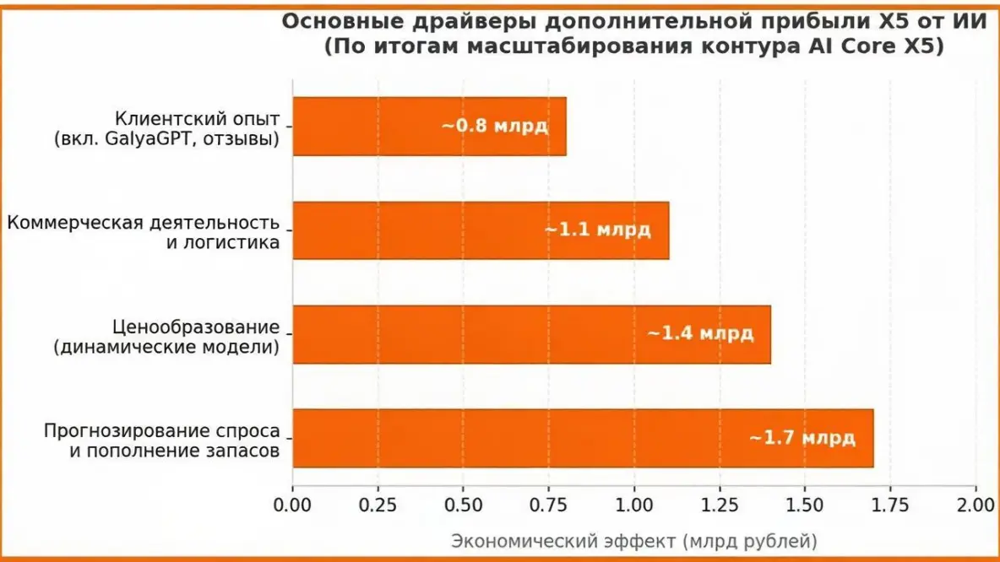

Как ИИ приносит миллиарды: реальные кейсы X5 Group, Сбера, МТС и Serverspace
Пока одни спорят, заменит ли нейросеть человека, крупный бизнес уже давно молча считает прибыль. Искусственный интеллект перерос стадию модной игрушки для генерации картинок и стал полноценным финансовым двигателем. Давайте посмотрим на реальные примеры российских и зарубежных корпораций, которые встроили ИИ в свои бизнес-процессы и получили ощутимые результаты.
Больше полезного про нейросети — простым языком, каждый день в нашей группе ВКонтакте
Перейти во ВКонтакте →Кейс 1: X5 Group (Пятёрочка, Перекрёсток)
Сеть продуктовых ритейлеров отчиталась о дополнительных 5 миллиардах рублей чистой прибыли за прошлый год — и это прямая заслуга искусственного интеллекта. Главные точки роста: динамическое ценообразование, когда алгоритм в реальном времени корректирует ценники в зависимости от спроса и остатков; прогнозирование потребностей на складах, что сократило списание просрочки; и автоматизация выкладки товаров. В итоге — миллионы оптимизированных операций каждый день.
Кейс 2: Сбер
Крупнейший ИИ-гигант страны не нуждается в представлении. Внедрение ассистентов на базе нейросетей для программистов и службы поддержки сократило время обработки рутинных запросов в 4–6 раз. Кредитные скоринговые системы теперь принимают решения по бизнес-заявкам за 2 минуты вместо нескольких дней, а процент невозвратов упал до исторического минимума.

Кейс 3: МТС
Нейросети полностью переформатировали работу колл-центров и отделов продаж. Чат-боты на базе ИИ обрабатывают до 75% первичных обращений без участия людей. Кроме того, система анализирует поведение абонентов и предлагает персонализированные тарифы, что снизило отток клиентов на 12%.
Кейс 4: Serverspace
Облачный провайдер внедрил интеллектуальное распределение серверных нагрузок. Нейросеть предсказывает пиковые часы активности и заранее перераспределяет мощности, предотвращая сбои и падения сайтов. Эффективность дата-центров выросла на 28%, а расходы на электричество заметно сократились.
Итог: ИИ — это не хайп
Искусственный интеллект превратился в жёсткую экономическую необходимость. Компании, которые до сих пор игнорируют внедрение нейросетей в свои CRM, ERP и производственные цепочки, через пару лет просто не выдержат конкуренции по себестоимости. Те, кто начал первыми, уже снимают сливки.
Полный разбор с графиками и аналитикой по ритейлу я выложил в своём Telegram-канале. Забирайте материалы, подписывайтесь, следите за новыми кейсами.
Перейти во ВКонтакте «ЖИВОЙ ИИ»
Где почитать подробнее: ComNews — про X5.
Ещё по теме
Как ИИ спас ПТО от ночных кошмаров: автоматизация исполнительной документации в строительстве
ИИ в глуши: краш-тест бесплатных нейросетей на слабом 3G без VPN